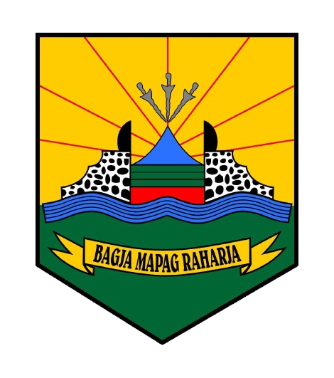

<div class="banner">
  <div class="flex-row">
    <div class="flex-row" style="align-items: start;">
      <div class="flex-item flex-column" style="max-width: 46.77%; min-width: 400px;">
        <h2 class="add-bottom-margin-small">Tentang Kami</h2>
        <hr>
        <a></a>
        <p class="text" style="text-align: justify;">
        <strong>Karyamukti - Panyingkiran</strong><br>    
        <strong>Kabupaten Majalengka - Jawa Barat</strong><br>
        Website desa dibangun sebagai bagian dari SISTEM INFORMASI DESA yang berfungsi sebagai portal informasi, 
        transparansi, dan sosialisasi pemerintah terkait tata kelola pembangunan kawasan perdesaan (pembangunan, 
        pembinaan dan pemberdayaan) yang dirasakan langsung oleh masyarakat sebagai penerima manfaat.
        </p>
      </div>

      <div class="flex-item flex-column" style="max-width: 46.77%; min-width: 400px;" >
        <h2 class="add-bottom-margin-small">Kontak Kami</h2>
        <hr>
        <a></a>
        <p class="text">Jl. Raya Siliwangi Km. 07 (Pondokan KKN UGM), Desa Karyamukti, 
        Kec. Panyingkiran, Kab. Majalengka, Jawa Barat 45459
        </p>
        <a href="https://www.instagram.com/pemdeskaryamukti/"></a>
      </div>
      <!--Start Credits-->
      <div class="flex-row">
        <div class="flex-item flex-item-stretch flex-column">
          <p class="text text-small text-italic add-top-margin-large">
            Credits: <span class="highlight-text">Desa Karyamukti</span> / 
            <span class="highlight-text">Tim KKN UGM Iringan Panyingkiran</span>
            /
            <span class="highlight-text">Urang ITS nyasar satu</span>
          </p>
        </div>
      </div>
      <!--End Credits-->
    </div>
  </div>
</div>